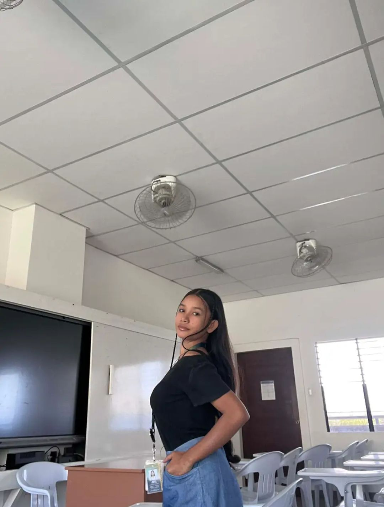

01
High school → now
Honor student
I have carried my commitment to learning from high school into college, staying focused and proud of every small win.
Personal portfolio · 2026
Hi, I’m May-Ann — a curious BSIT student, spoken poetry creator, and music lover finding my voice through every new experience.
“There is always something new to learn, feel, and express.”

A little about me
I’m building a future where technology and self-expression meet — one class, one poem, and one song at a time.
01 / About me
My journey is still unfolding, but every chapter is shaped by curiosity, discipline, and a little bit of creative courage.
At 19, I’m learning how to turn ideas into something useful, meaningful, and uniquely mine. I’m currently a second-year Bachelor of Science in Information Technology student at Kabankalan Catholic College.
I believe education is not only about collecting answers. It is also about asking better questions, staying open to change, and showing up with intention.
02 / My journey
The milestones that remind me how far consistency can take you.
High school → now
I have carried my commitment to learning from high school into college, staying focused and proud of every small win.
Present chapter
Exploring the world of information technology as a second-year student at Kabankalan Catholic College.
Next, and beyond
Learning new skills, finding my confidence, and creating work that feels honest and useful.
03 / Creative life
When I’m not studying, I make space for the things that help me feel most like myself.
Words can become a place to breathe.
Talent
Creating poems gives my feelings a voice and turns everyday moments into stories worth sharing.
Share a thoughtHobby
Music keeps me company while I study, reflect, reset, and let my imagination wander.
Press playA note from May-Ann
Thank you for visiting my little corner of the internet. I’m excited for the ideas, challenges, and connections still ahead.
04 / Let’s connect
I’m always open to kind conversations, creative ideas, and new ways to learn together.
Say helloReplace this email with your preferred contact detail.